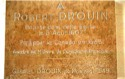

Beaubien-Perrault-Benington - Family Card
Beaubien-Perrault-Benington - Family Card
Robert DrouhinZacharie Cloutier(1590 - 17 Sep 1677)
M. DuboisXainte Dupont(1596 - 14 Jul 1680)
m. 12 Jul 1637, Québec, Québec

b. 6 Aug 1607, St-Barthelemi du Pin-la-Garenne, Perche, France
d. 1 Jun 1685, Chateau-RIcher, Québec
br.
occ. briquetier
edu.
rel.
Flags. Beaubien, Immigrant, Perrault
b. 9 Jan 1626, St-Jean-de-Mortagne, Perche, France
d. 3 Feb 1648, Québec, Québec
br.
occ.
edu.
rel.
Flags. Beaubien, Immigrant, Perrault
Children
> Geneviève Drouin(19 Oct 1643 - 4 Oct 1710)
> Jeanne Drouin(2 May 1647 - 24 Jun 1732)